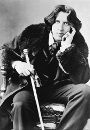

Yazar, oyun yazarı ve şair Oscar Wilde (1854–1900), İngiltere’deki Reading’te geçirdiği iki yıllık mahkumiyeti sırasında cinayet hükümlüsü bir cezaevi arkadaşının asılmasına tanık oldu. Adamın idamı Wilde’ı derin bir üzüntüye sokmuştu. Bu dönemde hissettikleri serbest kaldıktan sonra yazacağı The Ballad of Reading Gaol (Reading Hapishanesi Balladı) (1898) isimli şiirinin temelini oluşturdu:
Mahkumların gökyüzü dediği
Şu mavi çadıra
Hiç bu kadar hüzünlü bakan
Bir adam görmemiştim.

The Ballad of Reading Gaol, Wilde’ın 1900 yılındaki kırk altı yaşında ölümünden önce tamamladığı son eseridir. Önceki çalışmalarından çok daha hüzünlü olan esere Wilde’ın son yıllarında yaşadığı acı ve trajediler damgasını vurmuştu. Tutuklanması, homoseksüel olduğu için 1895 yılında hapis cezası alması ve gönüllü olarak ömrünün son üç yılını Fransa’da sürgünde geçirmesi onu derinden üzmüştü. Şiirdeki can alıcı sözlerinden biri de şuydu: “Hepimizin içinde ölen bir şey var. Umudun ta kendisi.”
Varlıklı bir İrlandalı doktorun oğlu olan Oscar Wilde edebiyat kariyerine Oxford’da öğrenciyken başladı. Burada şiirler yazdı ve “Estetik Hareketi”nin bir parçası oldu. Estetikçiler sanatın sanat için olduğuna inanmaktaydılar. Onlara göre sanatın esas meselesi bir mesaj taşımak ya da ahlaki dersler vermek değildi. Uzun saçları, huzur bozucu zekası ve göze çarpan giysileri Wilde’ı hareketin önde gelen simalarından biri haline getirdi. Tek romanı olan The Picture of Dorian Gray (Dorian Gray’in Portresi) 1891 yılında yayınlandı. Çok sayıda oyun yazdı. Özellikle The Importance of Being Earnest (Ağırbaşlı Olmanın Önemi / 1895) yaygın bir ilgiye mazhar olmuştur. Tutuklanmadan önceki düzyazı stili oldukça eğlenceliydi. Esprili, keskin bir dil kullanıyordu. Anlatımı şakalarla ve kelime oyunlarıyla doluydu.
1890’ların başında Wilde, önde gelen aristokratlardan Lord Alfred Douglas (1870–1945) ile bir ilişki yaşadı. Lord’un babası Queensberry Markizi’ydi (1844–1900). Markiz, Wilde’ı 19. yy İngilteresi’nde ağır bir suç olan eşcinsellikle suçladı. Wilde iki yıl ağır cezaya mahkum edildi.
Serbest kalmasının ardından Fransa’ya gitti. Burada takma bir isimle yaşamaya başladı. Üç yıl sonra Paris’te bir otel odasında menenjit nedeniyle öldü.
Ek Bilgiler
1- Queensberry Markizi, İngiltere’deki bir spor kulübüne verdiği destekle anımsanmaktadır. Bu kulüp 1880’lerde boksun kurallarının standardize edilmesinde önemli bir rol oynamıştır. Günümüzde dahi büyük ölçüde geçerli olan bu kurallar, “Queensberry Markizi” kuralları olarak bilinir.
2- The Picture of Dorian Gray, 1945 yılında Holywood filmi olmuştur. Colin Firth’ün (1960–) başrolü oynadığı yeni bir versiyonu ise 2009 yılında İngiltere’de gösterime girmiştir.
3- İngiltere ve Galler’de erkek eşcinselliğini yasaklayan kanunlar 1967 yılında feshedilmiştir.